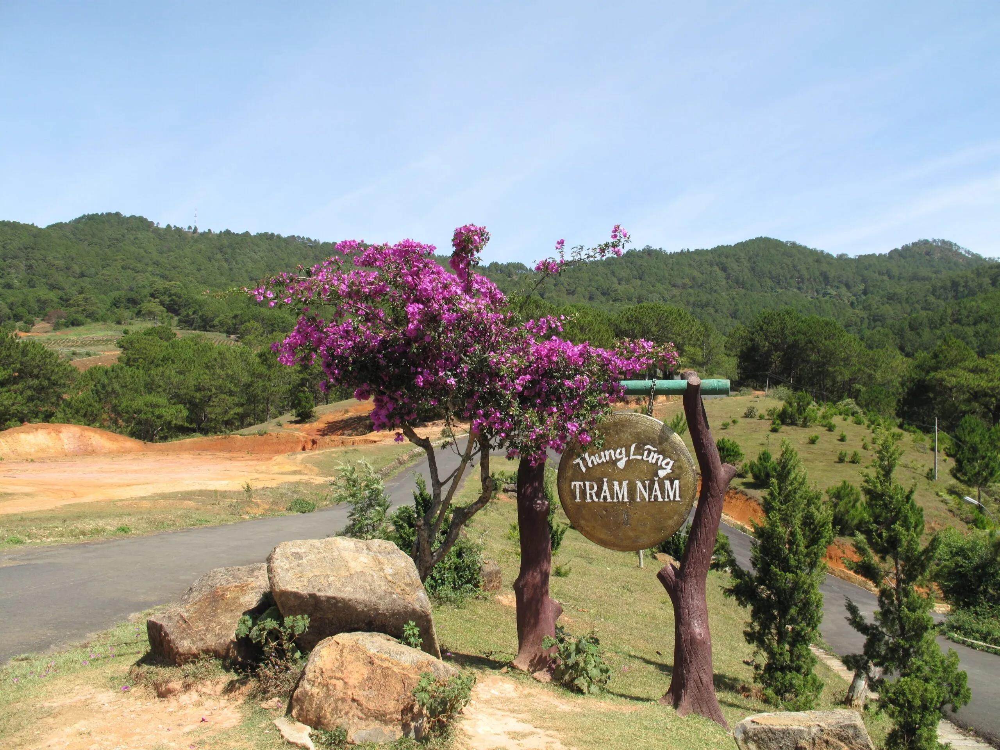

Explore Langbiang Peak - Legendary Symbol in Da Lat

Mục lục bài viết
- 1. Introduction to Langbiang peak in Da Lat
- 2. Share experiences in exploring Langbiang peak in Da Lat
-
3. What is there to see at Langbiang peak? Top 10 experiences not to be missed
- 3.1. Experience Jeep conquering Langbiang peak
- 3.2. Challenge yourself with the Langbiang mountain climbing journey
- 3.3. Paragliding – New perspective from Langbiang peak
- 3.4. Horseback riding - Transform into a cowboy in the mountains and forests of Da Lat
- 3.5. "Virtual living" burns the engine in unique miniature landscapes
- 3.6. Camping and cloud hunting - An indispensable experience at Langbiang peak
- 3.7. Walk on the Mimosa beach suspension bridge
- 3.8. Full view of Da Lat city and Suoi Vang lake
- 3.9. Sip a cup of coffee in a romantic space
- 3.10. Visit Hundred Years Valley with 1001 exciting activities
- 4. Cuisine suggestions near Langbiang peak
Do you want to know where Langbiang peak is, how much the ticket costs, and what attractions there are? Let's explore in detail the highest mountain in Da Lat - the legendary natural symbol of the foggy city right in this article!

Langbiang Mountain, one of the most famous and attractive tourist destinations in Da Lat, not only has majestic natural beauty but also contains touching love stories. With an altitude of 2,167 meters, Langbiang is a place that challenges and invites those who love to explore and experience nature.
1. Introduction to Langbiang peak in Da Lat
1.1. Where is Langbiang Peak located?
- Vị trí: Thị trấn Lạc Dương, huyện Lạc Dương, tỉnh Lâm Đồng – cách trung tâm Đà Lạt khoảng 12km về phía Bắc.
Langbiang is one of the prominent destinations when traveling to Da Lat. This is a famous eco-tourism area with green natural scenery all year round, fresh air and an ideal view of the foggy city from above.
In addition to natural beauty, this place also possesses the cultural identity of indigenous ethnic people such as K'Ho, Lach, Chil,... making the journey of discovery special and memorable.

1.2. How high is Langbiang peak?
With an altitude of 2,167 meters above sea level, Langbiang peak is known as the "roof" of Da Lat city. From the top of the mountain, visitors can admire the entire dim landscape of pine forests, valleys and winding streams in the distance - an experience not to be missed when coming to Da Lat.

1.3. How far is Langbiang from the center of Da Lat?
Từ trung tâm thành phố, bạn chỉ cần di chuyển khoảng 12km là đến được chân núi Langbiang. Cung đường đi qua những triền đồi phủ đầy hoa dã quỳ, đồi thông xanh rì và những cánh đồng rau khiến chuyến đi không chỉ là hành trình khám phá mà còn là một chuyến du ngoạn đầy thi vị.

1.4. The story of Langbiang peak
In addition to the beautiful natural scenery and attractive entertainment activities, Langbiang Dalat peak also attracts tourists because of the touching legendary story associated with this place. According to folk tales, long ago there were two tribes living at the foot of the mountain - the Chil tribe and the Lat tribe.
Among those two tribes, there is the boy K'Lang from the Lat people and the beautiful girl H'Biang from the Chil people. While going up the mountain to pick wild fruits, H'Biang was unfortunately attacked by a pack of fierce wolves. K'Lang appeared at the right time and bravely saved her from danger. From that fateful meeting, the love between the two blossomed and grew over the years.
However, because the two tribes have a long-standing enmity due to a curse, their love is strictly forbidden. Despite all barriers, K'Lang and H'Biang decided to leave the village and go to the top of the mountain to live together to preserve their deep love.
Time passed, H'Biang fell seriously ill. Unable to treat himself, K'Lang was forced to return to the village to ask for help. But instead of helping, the villagers thought he was a traitor and threw spears at him. In an emergency, H'Biang rushed out to block the arrow for her husband and died soon after. Too painful, K'Lang cried until his tears ran out, and those tears turned into a large stream named Da Nhim.
Sau cái chết của đôi trẻ, cha của H’Biang vì ân hận sâu sắc nên đã hợp nhất hai bộ tộc thành một – người K’Ho ngày nay. Hai ngọn núi Ông và núi Bà được cho là nơi an nghỉ của K’Lang và H’Biang, mãi mãi bên nhau trong lòng đất trời. Cái tên Langbiang ra đời cũng là sự kết hợp thiêng liêng giữa hai cái tên ấy – biểu tượng bất diệt cho một tình yêu thủy chung vượt mọi ranh giới.

2. Share experiences in exploring Langbiang peak in Da Lat
Nếu bạn đang lên kế hoạch cho chuyến tham quan đỉnh Langbiang – một trong những địa điểm du lịch nổi tiếng của Đà Lạt – đừng bỏ qua những kinh nghiệm khám phá Langbiang chi tiết dưới đây. Những thông tin này sẽ giúp chuyến đi của bạn thuận lợi, trọn vẹn và nhiều trải nghiệm đáng nhớ.
2.1. Ticket price to visit Langbiang peak
Giá vé vào cổng khu du lịch Langbiang khá hợp lý, phù hợp với hầu hết du khách. Hiện nay, mức vé là 50.000 VNĐ/người lớn và 25.000 VNĐ/trẻ em (áp dụng cho trẻ cao dưới 1m2). Nếu bạn muốn tiết kiệm thời gian và sức lực, có thể sử dụng dịch vụ xe Jeep để lên đỉnh với chi phí khoảng 120.000 VNĐ/lượt.
Ngoài ra, nếu bạn di chuyển bằng xe máy hoặc ô tô cá nhân, chi phí gửi xe tại khu du lịch chỉ từ 5.000 VNĐ/xe, rất tiện lợi và an toàn.
Mẹo nhỏ: Bạn nên mang theo tiền mặt vì một số dịch vụ nhỏ lẻ tại đây không hỗ trợ thanh toán điện tử.

2.2. Directions to the top of Langbiang Da Lat
Đường đến đỉnh Langbiang khá thuận tiện và dễ đi. Từ trung tâm thành phố Đà Lạt, bạn chỉ cần di chuyển khoảng 12km, mất tầm 30 phút bằng xe máy hoặc ô tô. Đoạn đường phần lớn được trải nhựa phẳng phiu, phù hợp cho mọi loại phương tiện.
Detailed directions are as follows:
- Xuất phát từ ngã 5 Đại học gần chợ Đà Lạt, bạn đi theo đường Nguyễn Văn Cừ, rẽ phải vào đường 3/2, rồi tiếp tục rẽ trái vào đường Phan Đình Phùng.
- Tới cuối đường Phan Đình Phùng, rẽ phải vào đường Xô Viết Nghệ Tĩnh, sau đó đi thẳng đến đường ĐanKia.
- Từ đây, tiếp tục chạy thêm khoảng 5,5km dọc theo trục đường ĐanKia là bạn sẽ đến được khu du lịch Langbiang.
Kinh nghiệm đi đỉnh Langbiang: Nếu bạn chưa rành đường, hãy dùng Google Maps hoặc hỏi người dân địa phương – họ rất nhiệt tình chỉ dẫn.

2.3. Which season is best to go to Langbiang peak in Da Lat?
Khí hậu Đà Lạt quanh năm mát mẻ, rất thích hợp cho các hoạt động ngoài trời. Tuy nhiên, thời gian lý tưởng nhất để chinh phục đỉnh Langbiang là từ tháng 1 đến tháng 7 – lúc này trời nắng đẹp, ít mưa, đường đi khô ráo nên dễ dàng di chuyển và leo núi.
Từ tháng 8 đến tháng 12, khu vực này bắt đầu vào mùa mưa, đường có thể trơn trượt hơn. Tuy nhiên, nếu bạn yêu thích khung cảnh săn mây Đà Lạt, thì đây lại là thời điểm lý tưởng để chiêm ngưỡng vẻ đẹp huyền ảo, thơ mộng của đỉnh núi này.
Ngoài ra, trong ngày, bạn nên chọn thời điểm tham quan từ 8h – 10h sáng hoặc 15h – 17h30 chiều. Thời tiết lúc này không quá nắng, trời trong, không khí mát mẻ – rất thích hợp để leo núi Langbiang, ngắm cảnh, săn mây hoặc check-in sống ảo.

3. What is there to see at Langbiang peak? Top 10 experiences not to be missed
Nếu bạn đang tự hỏi đỉnh Langbiang có gì chơi, thì hãy cùng khám phá ngay 10 hoạt động hấp dẫn giúp chuyến đi của bạn thêm phần đáng nhớ.
3.1. Experience Jeep conquering Langbiang peak
Với quãng đường khoảng 3km từ cổng vào đến đỉnh, xe Jeep là lựa chọn hoàn hảo nếu bạn muốn tiết kiệm sức lực và thời gian. Ngồi trên chiếc xe địa hình, bạn sẽ được trải nghiệm cảm giác mạnh khi xe vượt qua những đoạn đường quanh co, băng qua rừng thông và suối nhỏ. Vừa vi vu trên xe vừa chiêm ngưỡng khung cảnh thiên nhiên tuyệt đẹp, chắc chắn sẽ là một kỷ niệm khó quên trong hành trình khám phá Langbiang Đà Lạt.

3.2. Challenge yourself with the Langbiang mountain climbing journey
3.2.1. Suggested routes
Nếu bạn yêu thích thử thách và đam mê khám phá thiên nhiên hoang sơ, hành trình leo núi chinh phục đỉnh Langbiang sẽ là trải nghiệm không thể bỏ qua. Hiện nay, có hai cung đường phổ biến dẫn đến đỉnh núi Langbiang Đà Lạt: tuyến leo đồi Radar và tuyến leo núi Bà. Để đến được đỉnh cao nhất, bạn cần vượt qua hai chặng đường chính như sau:
- Chặng 1: Từ cổng khu du lịch đến trạm kiểm soát vườn quốc gia Bidoup – Núi Bà. Đa phần du khách sẽ chọn con đường mòn ở phía Tây, yên tĩnh và ít xe cộ hơn so với tuyến đường Jeep. Trên đường đi, bạn có thể ngắm những vườn dâu, đồi cà phê xanh mướt.
- Chặng 2: Từ trạm kiểm soát leo lên đỉnh núi Bà. Cung đường có biển chỉ dẫn rõ ràng, bạn sẽ vượt qua những bậc thang dài và rừng rậm để đến được đỉnh. Đừng quên nghỉ ngơi khi cần và mang theo nước uống, đồ ăn nhẹ.

3.2.2. Note when climbing Langbiang peak
Mặc dù hành trình chinh phục đỉnh Langbiang không quá gian nan như nhiều cung đường leo núi khác, nhưng để chuyến đi diễn ra an toàn và suôn sẻ, bạn vẫn cần có sự chuẩn bị kỹ càng cả về thể lực lẫn tinh thần.
Trước tiên, hãy đảm bảo bạn có một sức khỏe tốt, tinh thần phấn chấn, cùng với việc mang theo đầy đủ nước uống, thức ăn nhẹ và các vật dụng cần thiết. Đây là những yếu tố quan trọng giúp bạn duy trì năng lượng và hạn chế kiệt sức trong suốt hành trình.
Đặc biệt, đừng quên chuẩn bị bộ dụng cụ sơ cứu y tế cơ bản, phòng khi gặp phải các tình huống bất ngờ như trầy xước, bong gân hay va chạm. Ngoài ra, để đảm bảo an toàn hơn, bạn nên tham gia leo núi theo nhóm hoặc đi cùng đoàn. Việc tách nhóm không chỉ dễ gây lạc đường mà còn tiềm ẩn nhiều rủi ro không lường trước.
Ngoài việc chuẩn bị vật chất, bạn cũng nên trang bị thêm một số kỹ năng sinh tồn như: sơ cứu vết thương, giữ nhịp thở ổn định, sử dụng bản đồ hoặc công cụ định vị… Những kỹ năng này sẽ rất hữu ích trong trường hợp xảy ra sự cố, giúp bạn bình tĩnh và xử lý tình huống kịp thời.
3.3. Paragliding – New perspective from Langbiang peak
Nếu bạn yêu thích cảm giác mạnh và không ngại độ cao, bay dù lượn tại Langbiang sẽ là trải nghiệm khó quên. Hoạt động này đã thu hút nhiều du khách kể từ khi ra mắt vào năm 2014.
Trước khi bắt đầu, bạn sẽ được hướng dẫn kỹ thuật cơ bản bởi huấn luyện viên chuyên nghiệp. Sau đó, dù sẽ được thả từ đỉnh Radar và bay xuống khu vực hồ ĐanKia. Trong suốt chuyến bay, bạn có thể chiêm ngưỡng toàn cảnh Langbiang từ trên cao – một góc nhìn mới mẻ và đầy phấn khích.

3.4. Horseback riding - Transform into a cowboy in the mountains and forests of Da Lat
Tại khu du lịch Langbiang, bạn còn có thể tham gia trò chơi cưỡi ngựa cùng người bản địa. Sau khi được hướng dẫn cơ bản, bạn sẽ cưỡi ngựa qua các triền đồi, tận hưởng cảm giác thư thái giữa thiên nhiên. Đừng quên chụp vài tấm ảnh check-in cùng “người bạn bốn chân” dễ thương này nhé!

3.5. "Virtual living" burns the engine in unique miniature landscapes
Langbiang Peak is an ideal destination for those who are passionate about taking photos and preserving memories. With lush green natural scenery all year round, this place has no shortage of beautiful shooting angles for you to freely "live virtually".
Visitors can take photos with the statues of K'Lang and H'Biang - legendary symbols of love, or pose next to the infinity swing, the "Langbiang" sign standing out against the blue sky. Just bring a camera or phone and you can record a sparkling photo album, enough to show off on social networks all month long!

3.6. Camping and cloud hunting - An indispensable experience at Langbiang peak
With an altitude of over 2000m, Langbiang peak is the most ideal camping and cloud hunting spot in Da Lat. When camping here, you will enjoy a peaceful space, away from the noise of the city, and relax amidst fresh nature.
In particular, from the top of Langbiang, you can admire the clouds drifting close to your eyes, feeling like you are lost in a magical cloudy space, creating unforgettable romantic moments.

3.7. Walk on the Mimosa beach suspension bridge
An experience not to be missed when reaching Langbiang peak is checking in to the suspension bridge at Mimosa Beach. Located about 1.5 km from the reception area, Mimosa Beach has a wild and poetic beauty.
You will feel the thrill when walking on the ethnic suspension bridge and admiring the beautiful natural scenery around. Don't forget to pose virtually for impressive photos!

3.8. Full view of Da Lat city and Suoi Vang lake
Langbiang peak is considered the "roof" of Lam Vien plateau, where you can easily see the misty panorama of Da Lat and the splendid Suoi Vang lake below. The majestic and poetic natural scenery will leave you overwhelmed.
There are also binoculars on the top to help you clearly admire the beauty of Da Lat city from afar, creating a wonderful sightseeing experience.

3.9. Sip a cup of coffee in a romantic space
At Langbiang peak, you will find many cafes with airy spaces, ideal for relaxing. In the cool, chilly weather, sipping a hot cup of coffee amid the beautiful natural scenery will bring you a relaxing, pleasant, and memorable feeling.

3.10. Visit Hundred Years Valley with 1001 exciting activities
Hundred Years Valley is a destination not to be missed when coming to Langbiang. This is an eco-tourism and entertainment area built on a long-standing cultural foundation.
You can participate in the unique gong festival, interact with local people, light a campfire, enjoy wine and listen to traditional stories of the Central Highlands people - it will definitely be an unforgettable experience.

4. Cuisine suggestions near Langbiang peak
Sau khi khám phá vẻ đẹp hùng vĩ của đỉnh Langbiang, hãy dành thời gian ghé thăm Tiệm Nướng & Chill Xóm Lèo để thưởng thức những món ăn ngon miệng. Với không gian ấm cúng, thực đơn đa dạng và phong cách phục vụ tận tình, nơi đây chắc chắn sẽ là điểm dừng chân lý tưởng cho bạn.

📌 Địa chỉ: 113 Huỳnh Tấn Phát, Phường 11, Đà Lạt, Lâm Đồng 67000
📌 Inbox: m.me/nuongxomleo
📌 Google Maps: Xem đường đi
📌 Hotline: 076.45.27.336 – 08.99.42.84.34 – 0902.91.22.40
Langbiang peak không chỉ là biểu tượng du lịch của Đà Lạt mà còn là điểm đến lý tưởng cho những ai yêu thích khám phá và trải nghiệm. Cảnh sắc thiên nhiên hùng vĩ, câu chuyện tình yêu đầy ý nghĩa và các hoạt động thú vị tại đây sẽ mang đến cho bạn những kỷ niệm khó quên. Đừng quên ghé qua Tiệm Nướng & Chill Xóm Lèo để thưởng thức bữa ăn ngon lành, tạo thêm những kỷ niệm đáng nhớ trong hành trình khám phá thành phố ngàn hoa!